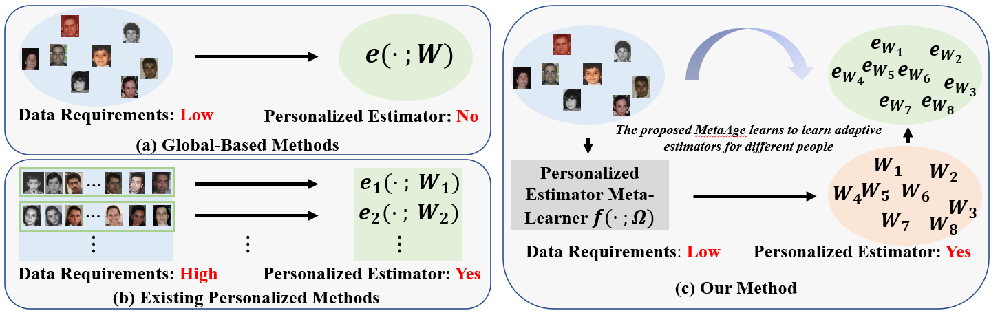
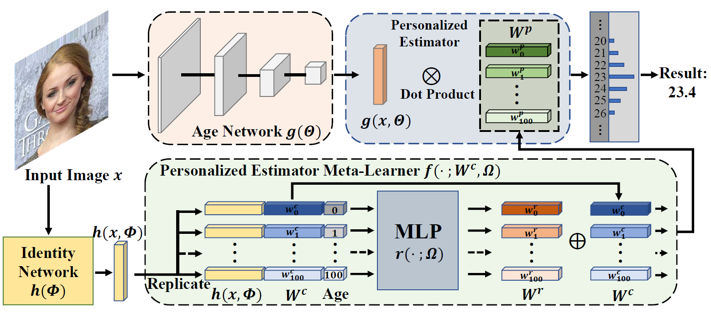

Abstract
Different people age in different ways. Learning a personalized age estimator for each person is a promising direction for age estimation given that it better models the personalization of aging processes. However, most existing personalized methods suffer from the lack of large-scale datasets due to the high-level requirements: identity labels and enough samples for each person to form a long-term aging pattern. In this paper, we aim to learn personalized age estimators without the above requirements and propose a meta-learning method named MetaAge for age estimation. Unlike most existing personalized methods that learn the parameters of a personalized estimator for each person in the training set, our method learns the mapping from identity information to age estimator parameters. Specifically, we introduce a personalized estimator meta-learner, which takes identity features as the input and outputs the parameters of customized estimators. In this way, our method learns the meta knowledge without the above requirements and seamlessly transfers the learned meta knowledge to the test set, which enables us to leverage the existing large-scale age datasets without any additional annotations. Extensive experimental results on three benchmark datasets including MORPH II, ChaLearn LAP 2015 and ChaLearn LAP 2016 databases demonstrate that our MetaAge significantly boosts the performance of existing personalized methods and outperforms the state-of-the-art approaches.
Motivation

Global-based age estimation methods only learn one global estimator for all samples, whereas most existing personalized methods require that everyone in the training set has enough images and then train a personalized estimator for each person. By contrast, our method learns to learn personalized estimators and outputs the parameters of an adaptive estimator for each person without the above two requirements.
Overview

The overview of our proposed MetaAge. For an input image x, we first send it to an age network g() to obtain the age features g(x). Meanwhile, the image x is also passed through an identity network h() to get the identity features h(x). Then our personalized estimator meta-learner generates the set of parameters with different age inputs. The estimated age is calculated with age features g(x) and the customized estimator.
Citation
Bibtex
@article{li2022metaage,
author = {Li, Wanhua and Lu, Jiwen and Wuerkaixi, Abudukelimu and Feng, Jianjiang and Zhou, Jie},
title = {MetaAge: Meta-Learning Personalized Age Estimators},
booktitle = {IEEE Transactions on Image Processing},
year = {2022},
doi = {10.1109/TIP.2022.3188061},
}